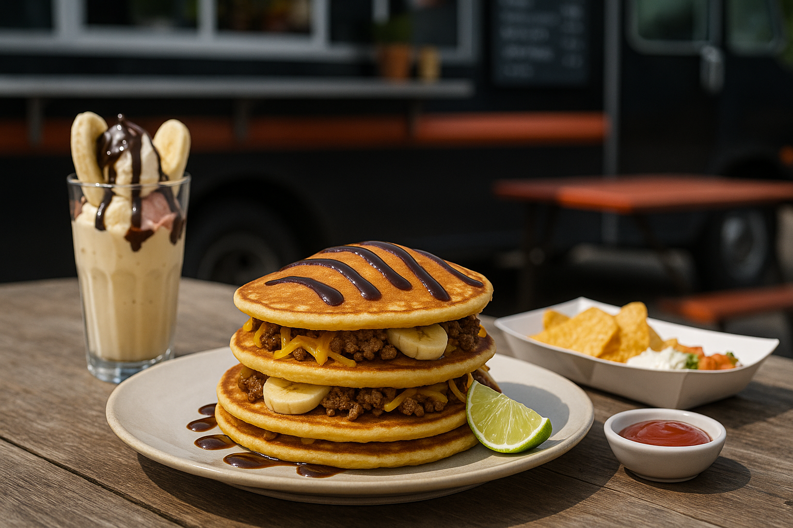
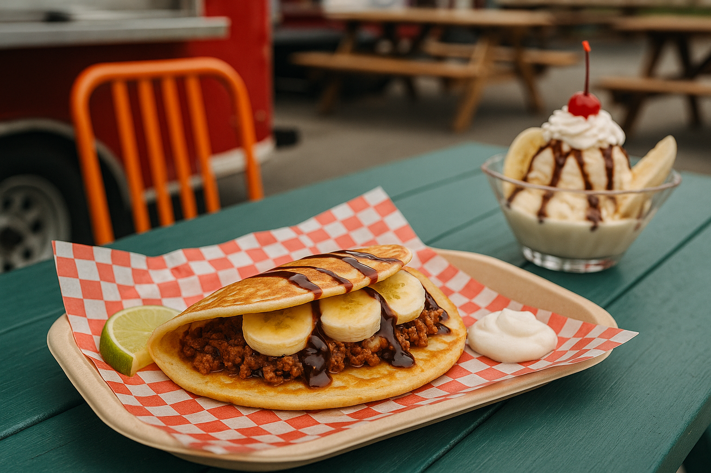

Tacos och banansplit-pannkakor
Här möts två världar: kryddig tacofärs och söt banan i kombination med chokladsås. Ett djärvt recept som blandar dessert och middag i ett och lockar den som söker oväntad fusionmatlagning.
Ingredienser
- 3 dl vetemjöl
- 6 dl mjölk
- 3 ägg
- 1 msk smör
- 300 g tacofärs
- 2 bananer
- 1 dl chokladsås
- 1 dl salsa
Så här gör du
- Stek pannkakor.
- Fyll med färs, banan, chokladsås och salsa.
- Rulla ihop och servera.
Serveringsförslag
- 
- 